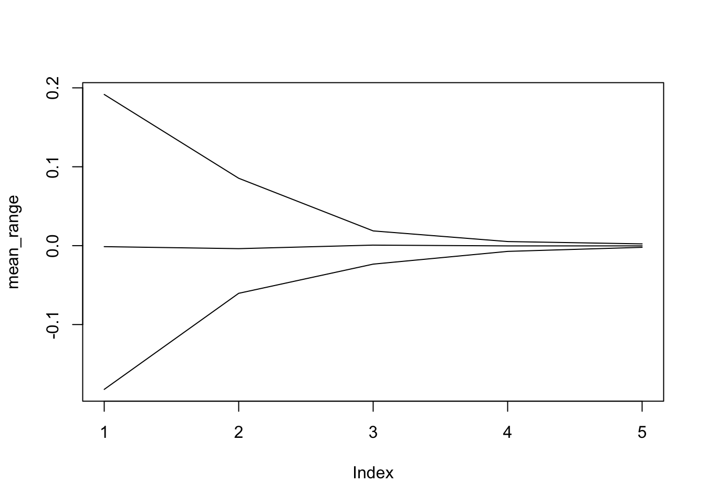

Chapter 5 Control Flow
5.0.1 Title
Often when we are coding, we need to control the flow of our actions. Just like in daily day to day life, we need to place conditions in which we manipulate our behavior. Statistical programming also fundamentally works in the same way. We program specific behaviors for the program to follow to obtain the statistics that we may need for various tasks like regression and bootstrapping.
5.1 Logical Operators
Logical operators are used very commonly across all platforms.
| Command | Description |
|---|---|
x > y |
x greater than y |
x >= y |
x greater or equals to y |
x < y |
x less than y |
x <= y |
x less than or equals to y |
x == y |
x equal to y |
x != y |
x not equal to y |
!x |
Not x |
x |y |
x or y |
x & y |
x and y |
isTRUE(x) |
test if all of x is TRUE |
Logical operators can be applied to vectors as well. For example, here we create two random numerical vectors and compare them.
x = c(3,6,3,4,5)
y = c(2,3,4,5,6)
x>y## [1] TRUE TRUE FALSE FALSE FALSEThis method outputs a vector of boolean TRUE and FALSE values that perform element-wise comparisons. Note, this is called a vectorized method, which we will further mention in some detail later. isTRUE() checks if all the elements within the object is TRUE.
isTRUE(TRUE)## [1] TRUEisTRUE(x>y)## [1] FALSE5.2 Control Structures
Control structures allow us to control the flow of code execution. We control the flow of code by using selection controls with logical operators and iterative controls like for-loops. For example, pretend we are trying to build a program that solves a simple maze like the one below.

It would be pretty easy to simply draw out the possible solutions with the naked eye. However, if you were actually inside the maze, you would need to narrow your perspective and think of a strategy, like marking paths you have already visited.
Try to follow the below procedure on the maze above, considering the direction you face while moving. Pretend that you cannot step backward or look behind you.
- if there is space in front of you, go forward
- else, if there is space on your right and left, turn right
- else, if there is only space on your right, turn right
- else, if there is only space on your left, turn left
- else, [all three sides (forward, left, right) are closed] turn around
Did you escape? Notice the way I structured my solution. Do you see a pattern? Though it might take some time, this way will in turn solve any maze.
5.2.1 Selection Controls
Basically if, if/else, if/elseif/else and switch
5.2.1.1 If/else
With this selection control, the user is able to define a strategy which consist of a series of moves that should complete all the hypothetical scenarios that may occur. Try to remember that time when you have played at “capture the flag” and you were thinking at a series of moves depending on what your competitor was going to do. If he is going left, I will go right and take the flag. Else I will stop him and prevent the capture of the flag. This hypothetical reasoning is at the core of the if/else statements.
5.3 Applications:
Past version:
if (conditon){
do something (if condition is TRUE)
}else{
do something else (if condition is false)
}My alternative:
Imagine that you are playing a game of tic-tac-toe and you are in this situation (here we can put a picture): if you want to design the best response strategy, an if/else statement is the perfect way to go. Here is how a pseudo-code will look like:
if (player 1 cross){
make your circle (if condition is TRUE)
}else{
do something else (if condition is false)
}5.3.1 Iteration Controls
5.3.1.1 for
The idea behind this specific control structure, is to repeat a given block of code as much times as you wish. Imagine a boring and repetitive task that you may have done during your life, with a for-loop you can tell your computer to perform that very same task again and again just on a different input unit each time.
5.4 Applications:
Anyone who has taken at least one introductory course in Statistics knows how to perform a standardization. It suffices to subtract the average and divide by the standard deviation. This is exactly the kind of repetitive task that is well managed by a for-loop. Below you can have a look at how a pseudo-code will look like:
for(i in 1:length(vector_name)){
stand_vector[i] = (vector_name[i] - mu) / sigma
}alternative example: (finance)
When we need to perform a financial analysis on stocks, we always work with returns rather than prices. Imagine a vector containing the closing daily prices of a stock in a given year and that you need to calculate the arithmetic returns. It suffices to subtract the price of the day before and divide the result by the same past price in order to retrieve the return for that specific day. This is exactly the kind of repetitive task that is well managed by a for-loop. Below you can have a look at a pseudo-code:
returns = rep(0,times=length(price_vector)-1)
for(i in 1:length(price_vector)-1){
returns[i] = (price_vector[i+1]-price_vector[i])/price_vector[i]
}5.4.1 Non-parametric Bootstrap
Suppose we ask 10 students how much time they work at home for their calculus class, we obtain the following results (in hour)
student_work = c(0, 0, 0, 0.25, 0.25, 0.75, 0.75, 1, 1.25, 4)We can compute the mean time spent
mean(student_work)## [1] 0.825ADD SOMETHING ON T TEST At this point we would like to make an inference over the whole class of students, basing our judgments on the sample values we have collected. The to obtain a credible interval for our class mean time, is to perform a t-test
t.test(student_work)$conf.int## [1] -0.03495865 1.68495865
## attr(,"conf.level")
## [1] 0.95We can see that our confidence interval includes a negative values which clearly isn’t meaningful. Solution: (non-parametric) bootstrap which works as follows….. ADD SOMETHING
Here is a simple function to implement this approach:
step 1 do this
step 2 do that# Number of boostrap replications
B = 500
# Compute the length of vector
n = length(student_work)
# Confidence level
alpha = 0.05
# Initialisation of
boot_mean = rep(NA, B)
for (i in 1:B){
student_work_star = student_work[sample(1:n, replace = TRUE)]
boot_mean[i] = mean(student_work_star)
}
quantile(boot_mean, c(alpha/2, 1 - alpha/2))## 2.5% 97.5%
## 0.25 1.55#hist(boot_mean, probability = TRUE)n = 10^(2:6)
m = 50
res = matrix(NA, m, length(n))
for (j in 1:length(n)){
for (i in 1:m){
set.seed(i)
x = rnorm(n[j])
res[i,j] = mean(x)
}
}
min_range = apply(res, 2, min)
mean_range = apply(res, 2, mean)
max_range = apply(res, 2, max)
plot(mean_range, type = "l", ylim = range(cbind(min_range, max_range)))
lines(min_range)
lines(max_range)